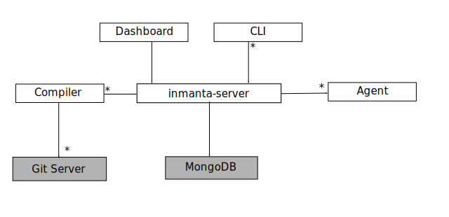
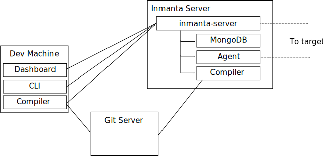

Architecture¶
The Inmanta orchestrator consists of several components:
{kind=link}
- The Inmanta server: This server manages the deployment process, it keeps track of all agents and the current state of all projects. The server stores it state in mongodb. All other state can be recovered after a server restart or failover. All other components use the REST API for bidirectional communication with the server. The complete server is asynchronous to ensure scalability.
- A mongodb database: The Inmanta server stores it state in a mongo database.
- The git server: The source code of the configuration models is stored in (one or more) git repositories.
- The compiler: The compiler converts the source code into deployable artifacts and exports it to the server.
- CLI and Dashboard: To control the server, you can use either the web dashboard or the command line tools. Both communicate through the server rest API. The dashboard is an AngularJS webapplication that fully depends on the REST API.
- The Inmanta agents: Agents execute configuration changes on targets. A target can be a server, a network switch or an API of cloud service. An agent can manage local and remote resources. This provides the flexibility to work in an agent based or agent-less architecture, depening on the requirements. Agent communicate with the server over an bidirectional REST API.
Inmanta can be deployed/used in three variants:
- embedded: all components are started with the deploy command, the server is terminated after the deploy is finished. Suitable only for development.
- push to server: the server runs on a external machine. Models are compiled on the developer machine and pushed to the server directly. Suitable only for small setups or for developement/debug purposes.
- autonomous server: the server runs on a external machine. Models are stored in git repos and compiled by the server.
The last two variants support agents on the same machine as the server or deployed on the management targets.
Embedded¶

In a embedded deployment, all components (server, agent and mongo) are started embedded in the compiler and terminated after the deploy is complete. No specific setup is required. To deploy the current model, use:
inmanta deploy
State related to orchestration is stored locally in data/deploy. This model is ideal of testing, development and one-off deployments.
Push to server¶

In a push to server model, the server is deployed on an external machine, but models are still compiled on the developer machine. This gives faster feedback to developers, but makes the compilation less reproducible. It also complicates collaboration.
Autonomous server¶
{kind=link}
With an autonomous server, developers can no longer push models into production directly. Only the server itself compiles the models. This ensures that every compile is repeatable and allows collaboration because all changes have to be committed.
Agent deployment¶
In the embedded model the agent is always executed by the compiler process. The two other modes provide the flexibility to deploy agents independant of the server or let the server manage the agents. Agents are the processes that make configuration changes to resources. Each resource is managed by an agent. The mapping of resources to agents is defined by the resource designer, however as a rule of thumb: each device (server, vm, switch, …) is an agent, each API endpoint (OpenStack or AWS region, …) is also an agent.
Each agent is hosted by one or more processes that can be started by the server (on the same machine) or manually on multiple machines. When more than one agent hosts an agent, the server will elect a primary and pauses the other agents. A single agent process (python process) can host multiple agents. Server side agents are always mapped to a single process per environment. The number of process influences the deployment speed in large environments.
Server side agents¶
The server is capable of running one or more agents. Server side agents are used for
- agent that talk to API’s. When the agent is not tied to any specific machine, it can be run on the server itself.
- agentless operation. Agents can remotely manage their target machine through SSH.
Local Agents¶
A local agent is most often used to manage the machine in which it is deployed. The agent will then connect to the to management server and manages the resources on the machine it is deployed.